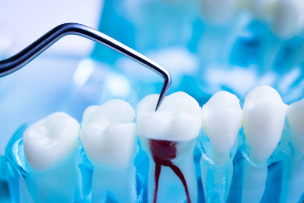
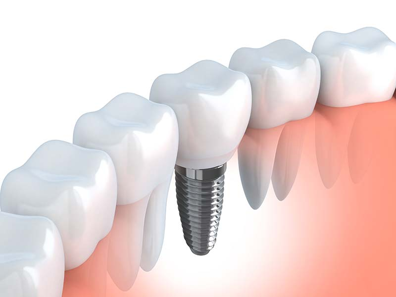
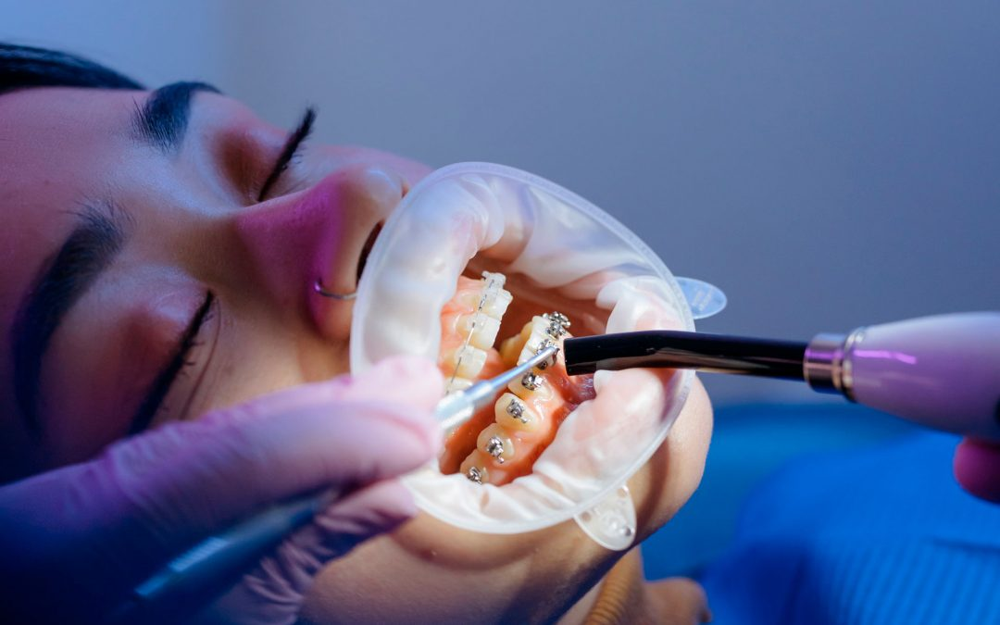

causa parte del nervio del diente. El tratamiento consiste en reparar y salvar el diente.
eliminando la pulpa dental, para descpues limpiar y selllar el interior del diente.
Endodoncia
La endodoncia es un tratamiento para dientes infectados o descompuestos gravemente cuya
causa parte del nervio del diente. El tratamiento consiste en reparar y salvar el diente.
eliminando la pulpa dental, para descpues limpiar y selllar el interior del diente.

con pernos metálicos que parecen tornillos y reemplaza el diente faltante, o dañado, con
un diente artificial que tiene el mismo aspecto y que cumple la misma función que los dientes reales.
Implantes
La cirugía de implantes dentales es un procedimiento que reemplaza las raíces de los dientes
con pernos metálicos que parecen tornillos y reemplaza el diente faltante, o dañado, con
un diente artificial que tiene el mismo aspecto y que cumple la misma función que los dientes reales.

y la mandíbula. La atención dental con ortodoncia incluye el uso de dispositivos, tales como
los aparatos, para: Enderezar los dientes. Corregir problemas con la mordida.
ortodoncia
La ortodoncia es la rama de la odontología que se encarga de los problemas de los dientes
y la mandíbula. La atención dental con ortodoncia incluye el uso de dispositivos, tales como
los aparatos, para: Enderezar los dientes. Corregir problemas con la mordida.